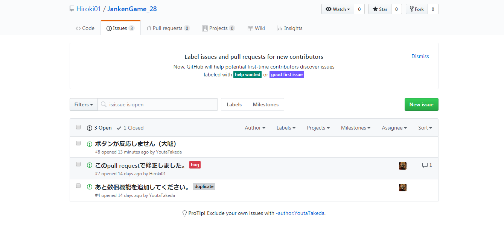
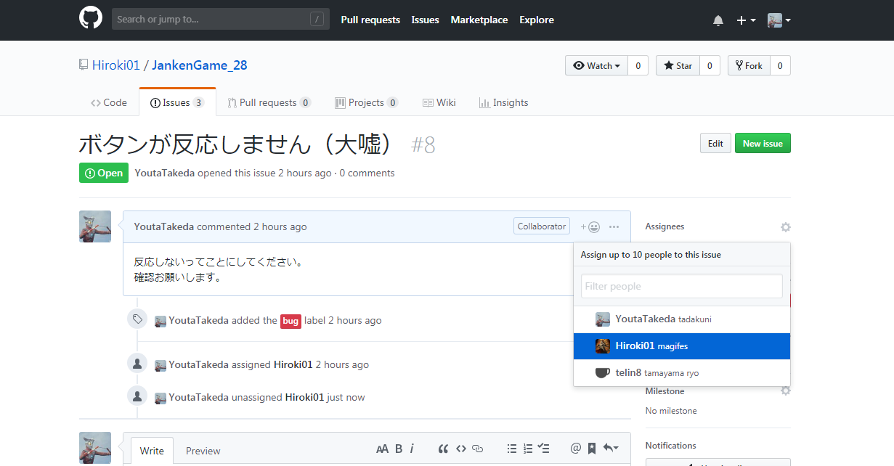
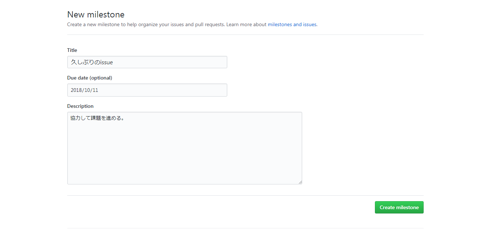
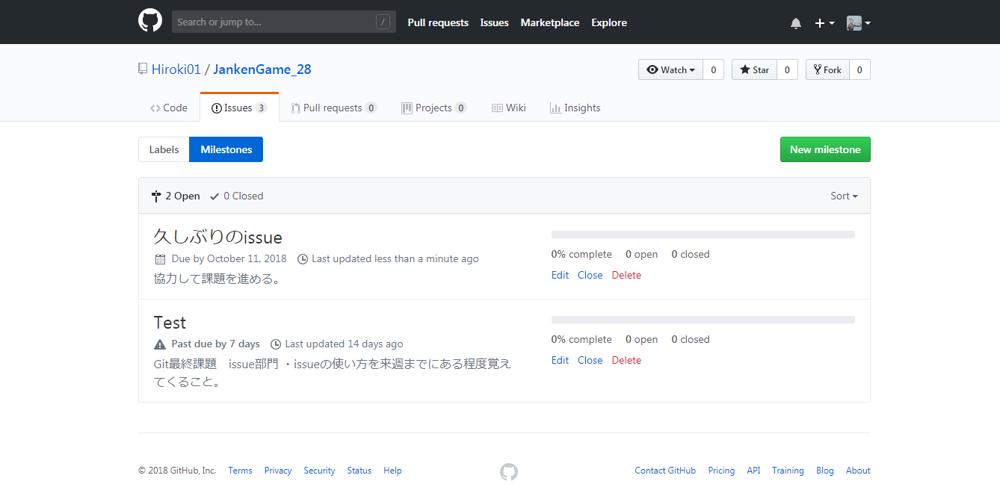
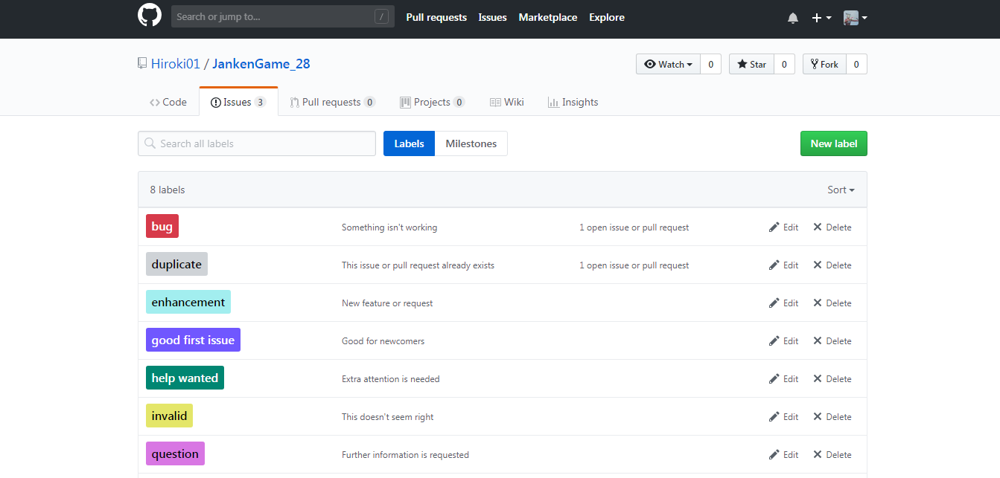
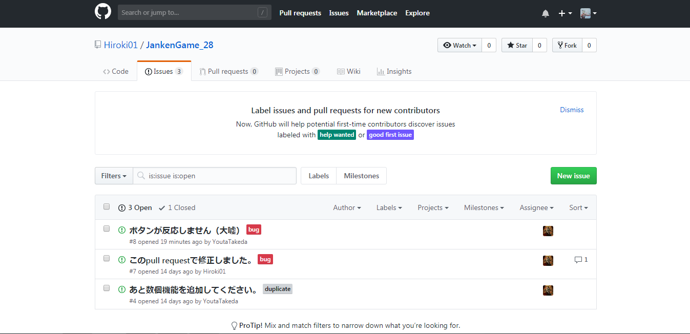

GitHubの使用方法

チーム開発に活用する「Github」について～Issuesの活用方法～
Issuesの流れについて
-
Issues
-
課題管理機能Issues（イシュー）とは
-
Issuesを使ってみる
-
担当者を明確にするAssignee（アサイニー）機能
-
スケジュールを管理するMilestone（マイルストン）機能
-
増えたIssueを整理するLabel（ラベル）機能
-
OSSでのIssues活用事例
課題管理機能「Issues」とは
「Issue」は、日本語訳すると「問題」や「課題」という意味があります。
GitHubのIssues機能もその通り、プロジェクトやソースコードの課題を管理するための機能です。
Issuesでプロジェクト管理をしているという事例は数多くあります。
その理由が、情報の一元化です。
GitHub Issuesなら、ソースコードやPull Request、変更履歴といったものを、簡単に課題と紐付けて管理していくことが可能です。情報が一箇所に集まることで、ソースコードの変更意図や現在の問題が、より明瞭になります。
プロジェクトの課題管理といえば、古くから使われているチケット型のRedmineや、最近ではPivotal Tracker、JIRAといったサービスも注目を集めています。GitHub Issuesはそれらのサービスと比較すると機能は控えめですが、それでもIssuesでプロジェクト管理をしているという事例は数多くあります。
その理由の一つが、情報の一元化です。GitHub Issuesなら、ソースコードやPull Request、変更履歴といったものを、簡単に課題と紐付けて管理していくことが可能です。情報が一箇所に集まることで、ソースコードの変更意図や現在の問題が、より明瞭になります。
それでは、実際の使い方を見ていきましょう。
Issuesを使ってみる
Issues機能は、リポジトリ単位に管理されています。リポジトリのトップページから[Issues]タブを選択し、[New issue]をクリックしましょう。
Issueにはタイトルとコメントを入力します。他にも設定できる項目はありますが、それは別の機会に紹介します。
タイトルは課題の内容(〜の機能が欲しい、〜という問題がある)を端的に表現して、
コメントの部分で仕様やバグの再現手順などを詳細に書いていく
といいです(スクリーンショットはダメな例です)。
[Submit new Issue]をクリックするとIssueの登録が完了します。あとはこのリポジトリにアクセス権限のある人なら、誰でもIssueに対してコメントができるはずです。
先ほどGitHubに情報を一元管理するメリットがあると説明しましたが、他のIssueやPull Request(PR)といい感じにリンクしてくれる機能があります。コメント中にIssue/PRのURLがある場合は短縮して表示され、他のIssue/PRからリンクされたときはタイムライン（？）に表示されます。
Issueが解決したら[Close issue]ボタンをクリックしてクローズしましょう。
クローズしたIssueも、完全に消える訳ではなく、Issueの一覧から確認できます。安心してクローズしましょう。
担当者を明確にする「Assignee」機能
ここからはちょっとした応用編の機能を紹介します。まずはプロジェクト管理には必須のAssignee（アサイニー）。Issueに担当者を割り当てる機能です。Issue画面のサイドバーにある[Assignee]という文字をクリックすると、ユーザーの選択画面が出てきます。
Assigneeはもちろん途中で付け替えることもできます。そしてIssueの一覧画面ではアイコンが並ぶので、誰がどのくらいのタスクを抱えているかが一目で分かるようになります。
Assigneeに指定することで、通知も逃さず受け取ることができます。ただ、1つのIssueに対して1人しかアサインできないという難点もあります。しっかりとルールを決めて運用していきましょう。
スケジュールを管理する「Milestone」機能
こちらもプロジェクト管理には必須の、Issueに締め切りをつけるMilestone（マイルストン）機能です。 GitHubでは、Issueごとに期日を切るのではなく、マイルストンを先に置いて、それにIssueを紐付けます。詳しく見ていきましょう。 まずはIssueの一覧画面からマイルストンの一覧画面に遷移します。そこから[New milestone]で新しいマイルストンを作成します。
マイルストンの設定画面ではタイトル、概要、期日を入力します。タイトルの付け方はチームごとに分かりやすいように定めると良いですね。[Create milestone]をクリックすると作成完了です。
マイルストンもAssigneeと同様、Issue画面のサイドバーから設定できます。Milestoneの一覧画面では、紐付けられたIssueの内、何%がクローズされたかという進捗が確認できます。マイルストンを先に設定し、そこに必要なIssueを紐付けていく、という仕組みになっていることが分かりますね。
増えたIssueを整理する「Label」機能
最後に、ちょっと便利なLabel（ラベル）機能です。その名の通りIssueにラベルを付けて分類できます。Issues一覧からラベル一覧を確認できますが、デフォルトでもbugやduplicate(重複したIssue)など、結構な数のラベルが揃っています。
まずはデフォルトのラベルで運用してみて、足りないようであれば追加していくのがいいでしょう。ラベルは1つのIssueに複数つけることができます。任意の色で表示できるので、一覧画面での視認性が増しますね。もちろんラベルでフィルタリングすることも出来ます。
以上でIssueの活用方法は終わりです。どのツールを使う時も同じですが、まずはゆるやかに始めてみて、徐々にチームに合った形に運用方法を固めていくといいでしょう。
OSSでのIssues活用事例
IssuesもPull Requestと同様に、OSS（オープンソースソフトウェア）の世界で活用されています。OSSを利用しているユーザーが、バグの報告や機能追加の要望を出し、Issues上でディスカッションが行われます。
そのため、使っているOSSで何か問題が発生したら、まずはそのリポジトリのIssuesを確認してみる癖を付けるといいでしょう。既に顕在化している問題で新しいバージョンでは直っていたり、将来の機能追加のロードマップが分かったりと、開発に役立つ情報が満載です。困ったときはIssueを確認してみると良いでしょう。